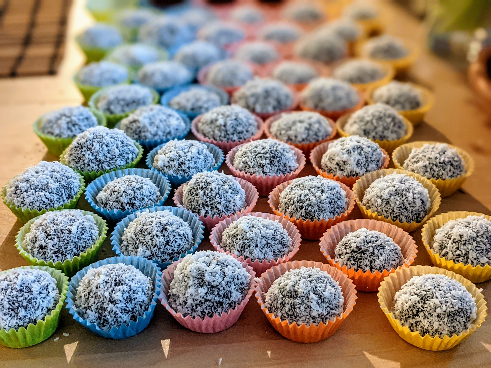

Brigadeiros

Pour une grosse quarantaine de bonbons :
- Une boîte de lait concentré sucré (~350g) (c'est important d'en prendre du sucré, sinon ça ne va pas marcher)
- Quatre cuillères à soupe de chocolat en poudre (on peut aussi utiliser du cacao en poudre, si on veut un résultat un peu plus amer).
- 25g de beurre
- 50g de chocolat en granulés, ou de noix de coco râpée, ou un peu des deux
- Verser le lait, le chocolat en poudre et le beurre dans une casserole à feu moyen. Mélanger en permanence, jusqu'à ce que ça devienne pâteux : s'arrêter lorsqu'on peut facilement voir le fond de la marmite lorsqu'on mélange.
- Beurrer vite fait un plat, et verser la préparation dedans. Laisser refroidir.
- Quand c'est refroidi, préparer les granulés et/ou la noix de coco râpée dans des petits bols ou assiettes à côté. Puis, se graisser les mains avec un peu de beurre, prendre un morceau de pâte à la petite cuillère, et faire des petites balles rondes avec ses mains.
- Passer chaque petit bonbon dans un bol pour l'enrober de granulés ou de noix de coco, et mettez ça dans des petits socles en papier pour truffes. Servir une fois que ça a passé un peu de temps supplémentaire au frigo, pour que ça se tienne bien.
Remarque : ça peut aussi se faire avec du lait concentré vegan (voir recette), et de la margarine pour remplacer le beurre. Ne pas hésiter à cuire un peu plus dans ce cas-là, ça prend plus difficilement une bonne consistance.